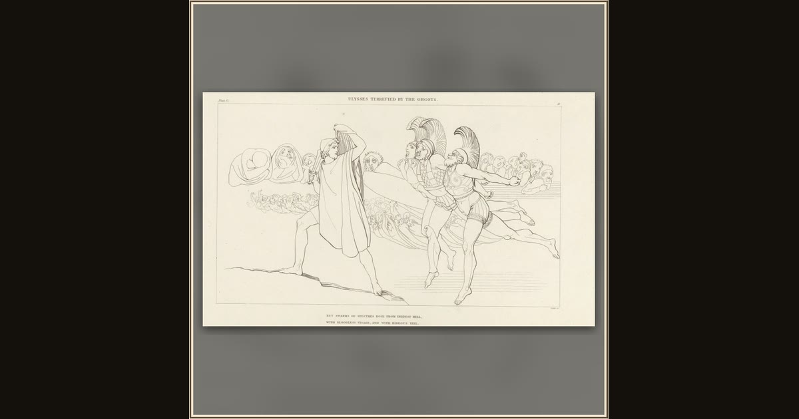

Ulysses Terrified by the Ghosts
James Parker, after John Flaxman · 1805 · Rijksmuseum · Amsterdam, Netherlands
Sword in hand, Odysseus faces the gathering shades. Elpenor is the first companion to speak, asking Odysseus to return to Circe’s island and bury him. Explore its place in Book XI of the Odyssey.